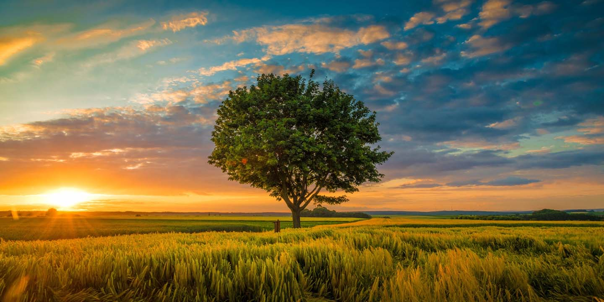
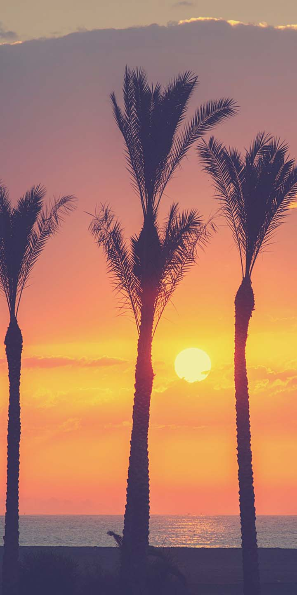

Bonjour, moi, c'est Ariette DESCHAMPS et je suis photographe professionnelle depuis maintenant plus de 9 ans! Spécialisée en portraits artistiques et très colorés, j'aime particulièrement les photos paysages dans lesquels je sublime les levés et couchés de soleil. Je vous accueille au sein de mon home studio situé à Versailles, vous y trouverez un endroit cosy, spécialement aménagé pour votre confort. Je peux aussi me déplacer à votre domicile ou profiter de l'extérieur au gré des saisons si vous le désirez. Je souhaite vous offrir des images qui vous ressemblent. Vous pouvez bien entendu me montrer vos inspirations, mais n'oubliez pas que vous êtes uniques et que vos images le seront aussi !





Mes réalisations PORTRAITS